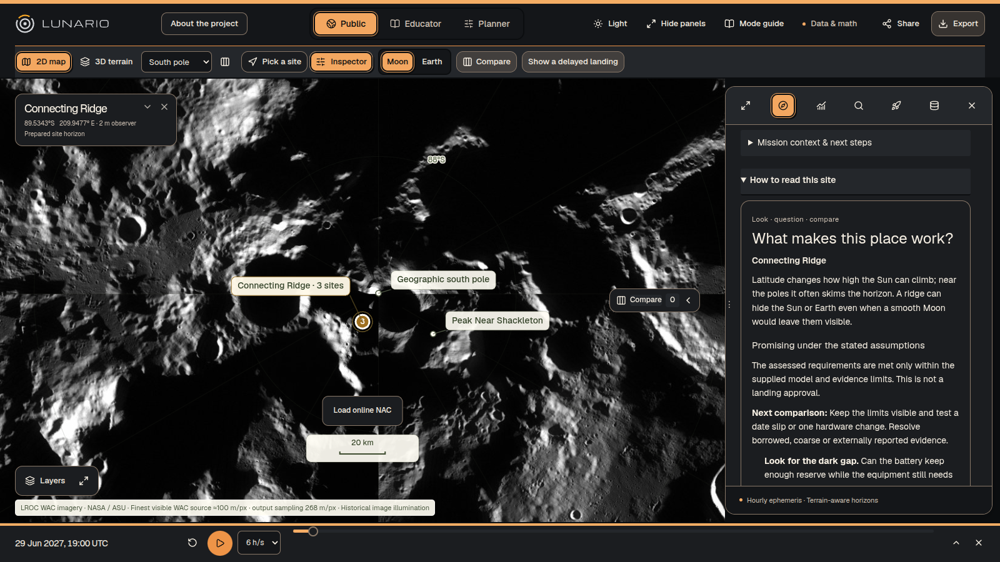
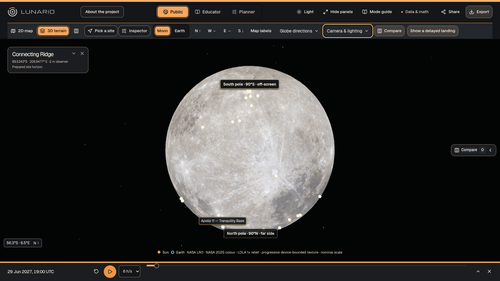
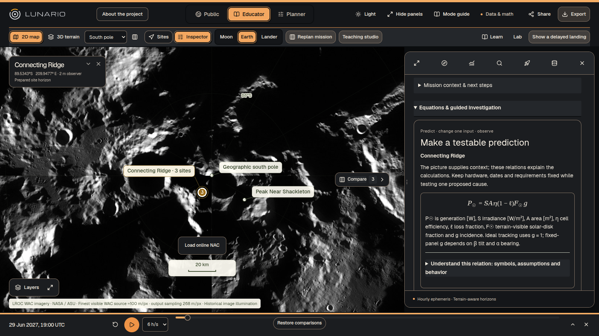
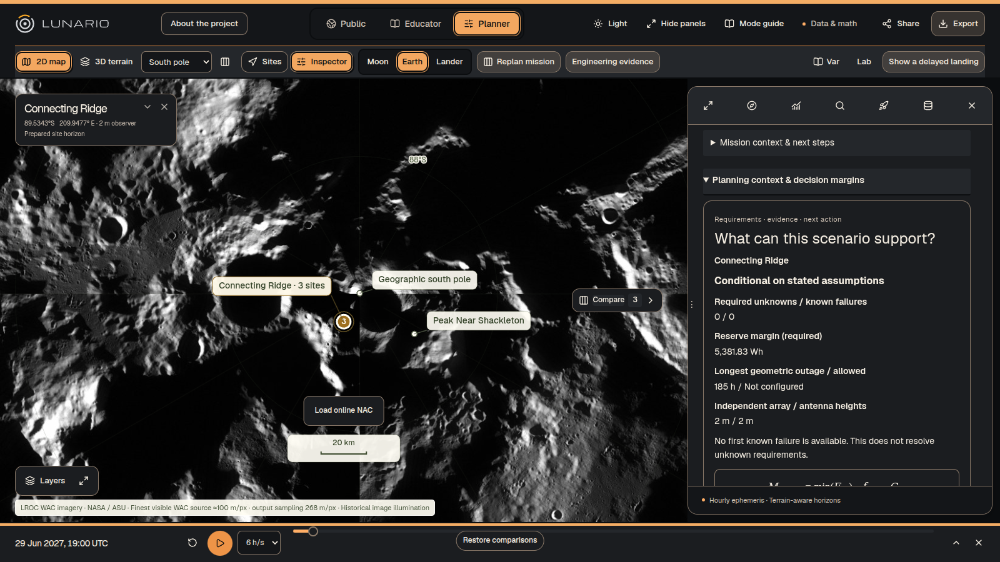
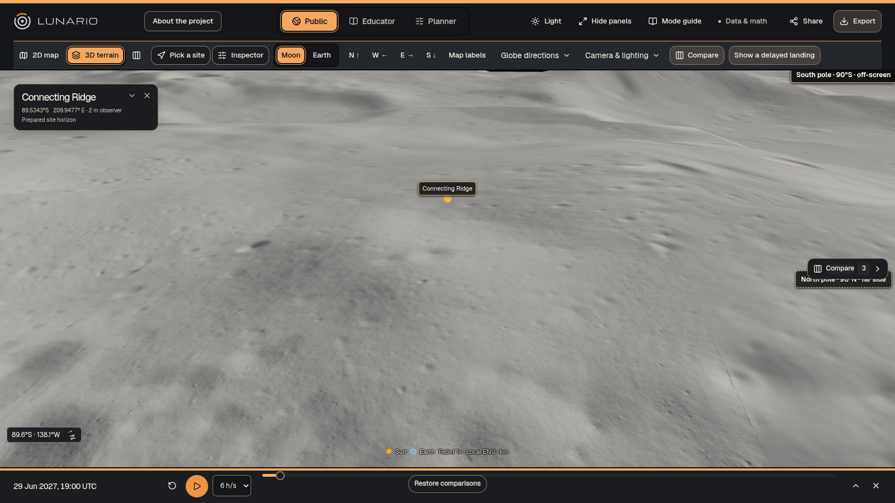
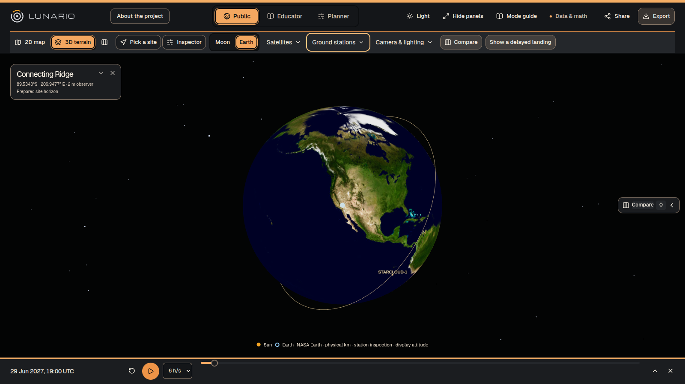
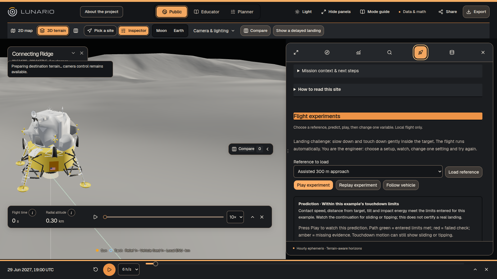

Read a site in plain language. Is the Sun up, and is Earth above the hills?

01 / 07
Lunario
A south-pole landing site can look open on a map. Lunario checks a real place, on a real date, against the terrain a lander would actually see.
Luke Dudley · Rian Banting · Ted Turner
NASA Space Apps

02 / 07
One Moon, three ways in
Read a site in plain language. Is the Sun up, and is Earth above the hills?

Predict one change, then reveal the result. The equation stays attached to the place.

Set the array, the battery, the antenna and how long the lander has to stay.

03 / 07
Place, date, Sun, Earth
04 / 07
What holds it together

05 / 07
Beyond the landing site

06 / 07
Try the landing

07 / 07
Leave with a decision
rian-beep.github.io/Lunario